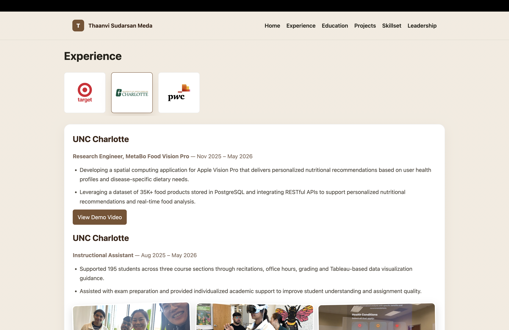
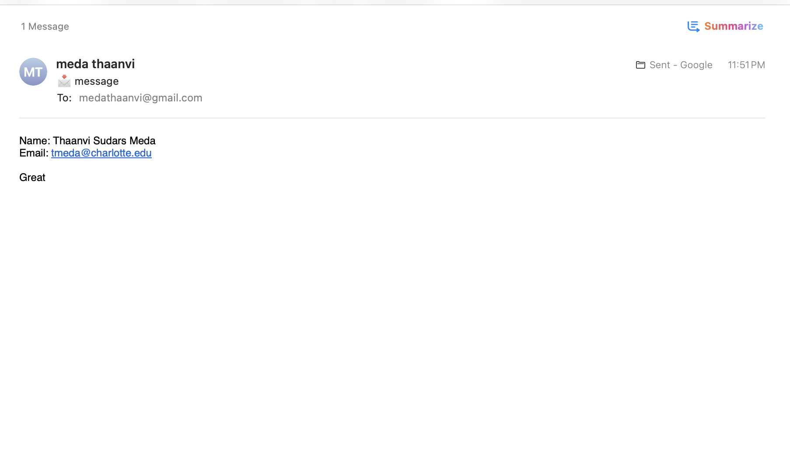

Thaanvi's Portfolio
A responsive personal portfolio website built to showcase professional experience, education, projects, technical skillset, leadership work, resume, and contact details through a clean static site structure.
Project Overview
The portfolio brings the major parts of my professional story into a single navigable experience. It includes a home page with detailed preview sections, dedicated pages for each category, horizontal project scrolling, education flip cards, and an interactive experience selector.
Key Features
- Multi-page portfolio structure with consistent navigation and styling.
- Project carousel with screenshots and dedicated documentation pages.
- Interactive experience panels and education flip-card gallery.
- Responsive layout designed for desktop and mobile viewing.
- Contact page with email-based message flow.
Tech Stack
HTML, CSS, JavaScript, Codex, Copilot, VS Code
Project Screenshots

Project and content presentation view.

Additional portfolio page and responsive content view.